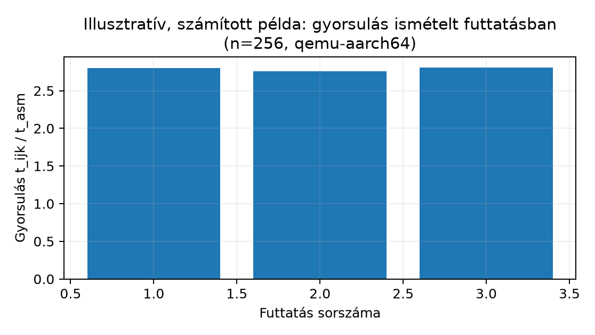

Az a059 alfejezetben a mátrixszorzó assembly
modul teljesítette az elfogadási küszöböt, a kimenet az a057 numerikus szerződése szerint egyezett a C
referenciával, és a gyorsulás tényezőire bontva is dokumentáltuk. A
mérnöki munka azonban ezzel nem fejeződik be. Egy assembly modul ugyanis
csendes hibákat hordozhat: a regiszter-ütközés, a
hiányos farokkezelés vagy a stack-igazítás megsértése nem feltétlenül
okoz azonnali összeomlást. A hiba csak bizonyos n
értékeknél, bizonyos regiszterkiosztásnál vagy egy másik
fordítógenerálta hívói környezetben jelentkezik. A projekt lezárásához
ezért nem elég „lefutott, és jó lett a szám” — strukturált, ismételhető
auditra van szükség.
A motiváció kettős. Egyrészt technikai: az assembly modul helyességét és hordozhatóságát csak rendszerszintű ellenőrzéssel lehet igazolni. Másrészt módszertani: a hallgatónak olyan önellenőrzési folyamatot kell elsajátítania, amelyet később csapatban, kódreview-ban és a II. rész bare-metal firmware-fejlesztésében is alkalmazni tud. Az audit nem azonos a hibakereséssel (debugging): míg a hibakeresés egy ismert tünet okát keresi, az audit megelőző jellegű — a rendszer állapotát hasonlítja össze egy előre rögzített követelménylistával.
Ebben az alfejezetben egy négy pillérű auditchecklistet építünk fel, végigvisszük egy konkrét mátrixszorzó modulon, kitérünk a mérési eredmény újraellenőrzésére, a biztonsági önellenőrzésre, a csapat-kódreview reakcióira, és lezárásként megmutatjuk, mi marad ebből a fegyelemből a Cortex-M bare-metal világában.
Auditchecklist (audit checklist): előre rögzített, pontokba szedett követelmény- és ellenőrzéslista, amely egy szoftvermodul vagy firmware auditalapját adja. Minden pont tartalmazza az ellenőrzési célt, a vizsgálati módszert, az elvárt eredményt és a lehetséges hiba tünetét. A checklist célja, hogy az audit reprodukálható legyen: ugyanaz a lista ugyanarra a modulra ugyanazt az eredményt adja, függetlenül attól, ki végzi.
Önaudit (self-audit): a fejlesztő saját maga által végzett strukturált audit, amelynek célja a projekt lezárása előtti hiányosságok feltárása. Az önaudit nem helyettesíti a független kódreview-t, de csökkenti a review során feltárt hibák számát, és fejleszti a fejlesztő saját kritikai szemléletét.
Az audit itt négy pillérre épül:
| Pillér | Kérdés | Elsődleges módszer |
|---|---|---|
| AAPCS64-illesztés | Betartja-e a modul a hívási konvenciót? | objdump -d, pro/epilógus-elemzés |
| Határellenőrzés | Minden memóriahozzáférés a megengedett tartományban van? | Tesztkészlet szélső n értékekkel, őrbájtokkal és
védőlappal; a C oldali AddressSanitizer a kézi assembly
elérését nem instrumentálja |
| Mentési szimmetria | Minden callee-saved regiszter visszaállításra kerül? | Regisztermentési napló és ldp/stp párok
összevetése |
| Build-reprodukálhatóság | Ugyanaz a forrás ugyanazt a binárist adja? | Két izolált build, sha256sum összehasonlítás |
A checklist kiegészül mérési reprodukálhatósággal és biztonsági önellenőrzéssel; ezeket külön szakaszokban tárgyaljuk.
Munkakönyvtár: ~/arm-labor/a64/zaro1/ —
az alfejezet minden laborfájlja ide kerül, és minden parancs innen
futtatandó (a könyvtárrendet a Labor-alapkörnyezet alfejezet írja le). Ez az I.
záróprojekt közös könyvtára: mind a négy alfejezete (a057–a060) itt dolgozik, és
egymás fájljaira épít.
mkdir -p ~/arm-labor/a64/zaro1
cd ~/arm-labor/a64/zaro1Az auditált modul ugyanaz, amelyet az a057
specifikált és az a058 implementált — nem egy
új, hasonló modul, hanem a tényleges lab_sgemm:
/* lab_sgemm.h */
#ifndef LAB_SGEMM_H
#define LAB_SGEMM_H
#include <stddef.h>
#define LAB_SGEMM_OK 0
#define LAB_SGEMM_EINVAL -1
int lab_sgemm(size_t n,
const float *restrict A,
const float *restrict B,
float *restrict C);
#endifAz A, B, C mutatók
n × n méretű, soronként folytonos float
tömbökre mutatnak; a visszatérési érték
LAB_SGEMM_OK/LAB_SGEMM_EINVAL. A modul
NEON-nal négy float-ot dolgoz fel egyszerre, a maradékot
skaláris farokkal. Az auditot az alábbi parancsokkal kezdjük.
aarch64-linux-gnu-gcc -O2 -c lab_sgemm.S -o lab_sgemm.o
aarch64-linux-gnu-objdump -d lab_sgemm.o | sed -n '/<lab_sgemm>:/,/^$/p'Az audit a tényleges implementáció regiszter- és
memóriaelérési szerződését követi, nem egy általános prológusmintát. A
lab_sgemm levélfüggvény: nem hív mást, és keretrekordot
(X29/X30) sem épít. A keretet egyetlen
pre-indexelt stp x19, x20, [sp, #-80]! nyitja (nincs külön
sub sp, sp, #N), a mentéseket négy további stp
végzi. Ellenőrizzük:
stp ..., [sp, #-80]! és a záró add sp, sp, #80
ugyanazt a 16 többszörösét adja, és minden kimeneti út
(.Ldone, .Linvalid, .Lempty_ok) a
közös .Lepi epilógusra fut;x19–x28) szerepel
egy prológusbeli stp-ben és ugyanazon a helyen egy
epilógusbeli ldp-ben. A v8–v15
regiszterekhez nincs mentés, és nem is kell, mert a modul csak
v0, v1, v2 és v5
regisztert ír. Az auditnak ezt is ellenőriznie kell: egyetlen
v8–v15 regiszterre (vagy azok
s/d nevére) író utasítás sem lehet a
törzsben;x29/x30: a modul egyiket
sem írja, és nincs benne bl/blr. Ezért
szabályos, hogy az x30 nincs mentve: levélfüggvény a
változatlan LR-rel tér vissza. Mentés akkor kellene, ha a függvény
hívást tartalmazna vagy az x30-at másra használná;x18: a modul nem írja. A
platformregiszter szerepe platformfüggő (lásd az a058 regisztertáblázatát), ezért a nem használat
hordozható választás;x0 = n, x1 =
A, x2 = B, x3 =
C, és a modul ezeket a határellenőrzés előtt az
x19–x22-be másolja.Egy tipikus hiba ebben a szerkezetben: a törzs használ egy
callee-saved regisztert, amely egyik stp párban sem
szerepel. A nyom tehát nem egy konkrét str x19 hiánya,
hanem az, hogy egy írt callee-saved regiszter hiányzik a mentett
regiszterek halmazából. Ezt a 2. feladat szkriptje gépiesen ellenőrzi. A
hiba csak akkor jelentkezik, ha a hívó (például a main)
abban a regiszterben élő értéket tart, ezért a statikus ellenőrzés mellé
az a058 lab_abi_call alapú
ABI-tesztje is kell.
Az n × n mátrixszorzás indexei
0 ≤ i, j, k < n. A mag memóriaelérési szerződése az
i-k-j sorrendből következik:
| Elérés | Utasítás | Tartomány |
|---|---|---|
A egy eleme, 4 sávra szétmásolva |
ldr s0, [x25, x27, lsl #2] +
dup v0.4s, v0.s[0] |
A[i·n + k], k < n |
B egy sorának 4 eleme |
ldr q2, [x28, x4] |
B[k·n + j … k·n + j + 3], csak ha
j + 4 ≤ n |
C egy sorának 4 eleme (olvasás és írás) |
ldr q1 / str q1, [x26, x4] |
C[i·n + j … i·n + j + 3], csak ha
j + 4 ≤ n |
| skalár farok | ldr s1/ldr s2/str s1 |
a j + 4 > n maradék, elemenként |
| sor nullázása | str q5 / str wzr |
C[i·n … i·n + n − 1] |
A mag tehát nem olvas B-oszlopot, és
A-ból egyszerre csak egy elemet tölt. A határhiba
jellegzetes helye a j + 4 ≤ n feltétel: ha a vektoros ág
j < n-ig futna, a B- és C-sor
végén legfeljebb 3 elemmel túlnyúlna. Ez belső soroknál a következő sor
elejét érinti, az utolsó sornál a mátrixon kívülre ér. Az a059 lab_sgemm_test programja a
határeseteket
(n = 0, 1, 2, 3, 5, 7, 8, 16, 17, 63, 64, 65, 128, 256)
argumentum nélkül, magában végigsöpri, a mátrixokat pedig védőlap elé
teszi. Az audit során ezért elég egyszer, változatlan bemenettel
újrafuttatni:
qemu-aarch64 -L /usr/aarch64-linux-gnu ./lab_sgemm_test || echo "FAIL"Az elvárt eredmény az a057 numerikus
szerződése szerinti egyezés minden elemre (véges érték és
|c_asm − c_ref| ≤ atol + rtol · s_ij), nem bitre pontos
egyezés. A
-sorrend
a modulban és a referenciában ugyanaz; az eltérés a float,
illetve a double pontosságú összegzésből jön. Ha
n = 3-ra numerikus FAIL jön, a skalár farok hibás. Ha
n = 17-re laphiba jön a védőlapon, a vektoros ág
j + 4 ≤ n feltétele csúszik el a
B/C sorvégen. Ha egy NaN-os elem miatt jön
FAIL, valamelyik C-elem kimaradt a nullázásból vagy az
írásból (a teszt a C-t előre NaN-bitmintával tölti).
n = 0-ra LAB_SGEMM_OK-t várunk (nem
EINVAL-t), írás nélkül a C-re.
Készítsünk egyszerű szimmetria-ellenőrzést a objdump
kimenetéből:
aarch64-linux-gnu-objdump -d lab_sgemm.o \
| awk '/<lab_sgemm>:/,/ret/ {print}' \
| grep -E 'stp|ldp|str|ldr' > /tmp/lab-sgemm-save.logA logban minden stp xN, xM, [sp, ...] párnak meg kell
jelennie ldp xN, xM, [sp, ...] formában, ugyanazzal a
regiszterpárral és ugyanazzal az offsettel. Ha egy
str x20, [sp, #16] mellett nincs
ldr x20, [sp, #16], a függvény nem állítja vissza a hívó
x20-át. Ez a hiba a C oldalon gyakran úgy jelentkezik, hogy
egy hívó ciklusváltozó „elromlik” a lab_sgemm hívása után —
látszólag összefüggéstelenül a mátrixszorzástól.
Két izolált könyvtárban, ugyanazzal a toolchain-verzióval és
ugyanazokkal a flag-ekkel lefuttatjuk a buildet. Mivel az a057–a059 nem vezet be
BUILD_DIR-paraméteres Makefile-t a lab_sgemm
modulhoz (csak közvetlen fordítóhívásokat mutat), az izolációt itt is
közvetlenül, két célkönyvtárral érjük el:
mkdir -p /tmp/lab-build-a /tmp/lab-build-b
aarch64-linux-gnu-gcc -O2 -c lab_sgemm.S -o /tmp/lab-build-a/lab_sgemm.o
aarch64-linux-gnu-gcc -O2 -c lab_sgemm.S -o /tmp/lab-build-b/lab_sgemm.o
sha256sum /tmp/lab-build-a/lab_sgemm.o /tmp/lab-build-b/lab_sgemm.oAz elvárt eredmény: a két sha256sum azonos. Ha eltér, az
ok leggyakrabban a beágyazott időbélyeg (__DATE__,
__TIME__), a nem determinisztikus szekció-sorrend vagy a
build útvonalától függő debug-információ. A reprodukálhatóság nem öncél:
biztosítja, hogy a mért eredmény egy adott binárisra vonatkozik, és
később is azonos körülmények között megismételhető.
Az a059 mérése egyszeri futtatásból
származott. Az audit kötelező lépése a második futtatás
és a szórásvizsgálat. A mátrixszorzás n = 256 esetén,
qemu-aarch64 user-mode emulációban, három egymást követő
futtatás eredménye (illusztratív, kitalált példa; a gyorsulás itt a naiv
i-j-k C-hez mért teljes arány, ugyanazon környezetben):
| Futtatás | t_asm [ms] |
t_ijk [ms] (naiv C) |
Gyorsulás
(t_ijk / t_asm) |
|---|---|---|---|
| 1 | 42.1 | 118.0 | 2.80 |
| 2 | 43.0 | 118.5 | 2.76 |
| 3 | 41.8 | 117.6 | 2.81 |

A relatív szórás a szórás és az átlag hányadosa — nem a (maximum − minimum) és az átlag hányadosa, ami a relatív terjedelmet adná, egy durvább és a mintaszámmal rosszul skálázó mérőszámot. A három gyorsulás-érték átlaga . A (mintás) szórás:
és ebből a relatív szórás:
(A relatív terjedelem, , egy másik, durvább szóródási mérőszám lenne — csak két futtatást (a legkisebbet és legnagyobbat) vesz figyelembe, a szórás viszont mindhármat.)
Ha a második futtatás gyorsulása több mint 10%-kal eltér az elsőtől, az alábbi hipotéziseket kell sorra venni:
top,
uptime.cpupower frequency-info,
hőmérséklet.malloc-olt pufferek eltérő laphatárokra esnek, ami QEMU-ban
is befolyásolhatja a memóriahozzáférést.A mérési audit akkor zárul le, ha a második futtatás
ugyanabban a sávban van (±5%), vagy ha az
eltérésre dokumentált, elfogadott magyarázat született.
Az a053–a056 alfejezetek a verem-túlcsordulást, a canary/ASLR/NX/PAC védelmet és a ROP-lánc felismerését tárgyalták. Az audit során ezeket a szempontokat defenzív módon kell érvényesíteni:
lab_sgemm-ben stp x19, x20, [sp, #-80]!, más
modulban akár sub sp, sp, #N) és a záró
add sp, sp, #N között minden veremre író utasítás célcíme a
[sp, #offset] tartományban van, ahol
0 ≤ offset < N.GNU_STACK
szegmense RW (readelf -lW). A modul forrása
tartalmazza a .note.GNU-stack direktívát, de a bizonyíték a
végső binárisról szól, nem a forrásról; a direktíva hiánya önmagában nem
igazol végrehajtható vermet.x30-et a stackre menti, azt a visszatérés előtt kötelező
visszaállítani. PAC (Pointer Authentication) használatakor a
visszatérési cím aláírása és ellenőrzése a hardver feladata; az assembly
modulnak a paciasp/autiasp párt kell
használnia, ha a rendszer PAC-ot vár. A retaa csak
Armv8.3-A-t megkövetelő binárisban használható, mert régebbi magon
SIGILL-t okoz, míg a HINT-kódolású
paciasp/autiasp ott NOP.-fstack-protector-strong kapcsolóval fordítja a hívó kódot,
az assembly modulnak nem kell canary-t kezelnie, de nem
szabad a canary által használt stack-helyet felülírnia. Az
assembly modul saját stack-keretét ezért úgy kell kialakítani, hogy a
hívó canary-je érintetlen maradjon.X30 értékét, majd a
ret erre ugrik (PC ← X30; lásd a ROP-lánc felismerése levezetését). Az
X30 forrása levélfüggvényben a belépéskori, változatlan
érték: ez a helyzet a lab_sgemm-nél, amely az
X30-at nem írja és nem menti. Nem-levél függvényben a
prológusban mentett, és az epilógusban a saját
keretéből visszatöltött érték, tipikusan
ldp x29, x30, [sp], #16 vagy
ldr x30, [sp, #off]. Az audit három dolgot vizsgál: honnan
kap értéket az X30 a ret előtt; ez a betöltés
a modul saját, kiegyensúlyozott keretéből történik-e; és minden
visszatérési út ugyanezen a visszatöltésen megy-e át. A szabályos
epilógus maga nem hiba. Összehasonlításként, ISA-váltással: a II. rész
Thumb-2 kódjában a pop {…, pc} önálló visszatérési
művelet. Egyetlen utasítás tölti vissza a PC-t a veremből,
külön ret nincs, és A64-en nincs ilyen alak (lásd a061).Az önellenőrzés nem azt jelenti, hogy a modulnak minden támadást ki kell védenie — hanem azt, hogy nem növeli a rendszer támadási felületét a C referencia implementációhoz képest.
Ha egy csapat-kódreview hiányosságot talál — például egy review-társ
észreveszi, hogy az x21 nincs visszaállítva, vagy hogy a
farokkezelés n = 0 esetén osztással próbálkozik —, az
alábbi folyamatot érdemes követni:
n, konkrét bemenet,
konkrét parancs). Ha a hiba nem reprodukálható, először a reprodukciós
körülményeket kell tisztázni.stp/ldp pár) ronthatja a gyorsulást. Az a059 mérési eredményét a javított binárisra újra
kell igazolni.CHANGELOG-jában vagy a commit
üzenetében rögzíteni kell. Ez az auditnyom.A kódreview nem verseny, hanem közös hibamegelőzés. A review-társ által talált hiba nem a szerző kudarca, hanem a folyamat működésének bizonyítéka.
Az ach15 felé fordulva érdemes összegezni, mi az, ami az AArch64 alkalmazásszintű auditból átvihető a Cortex-M bare-metal világába:
PUSH/POP és a
STMFD/LDMFD párok szimmetriája ugyanaz az
auditpont.valgrind vagy AddressSanitizer; a memóriahibák
gyakran a perifériaregiszterek véletlen felülírásában jelentkeznek. Az
auditnak itt is ki kell térnie a tömb- és pufferhatárokra, különösen az
ISR-ek és a DMA-pufferek esetén.mps2-an385
machine-en mért ciklusszám szintén nem hardverhű, de a relatív
összehasonlítás és a szórásvizsgálat módszertana változatlan.Az auditmódszer tehát nem az AArch64-hez kötött, hanem architektúra-független mérnöki fegyelem, amelynek konkrét ellenőrzési pontjai igazodnak az adott ISA-hoz és futási modellhez.
1. feladat (magyarázó, alapszint — cél:
megértés-ellenőrzés): Mit jelent a mentési szimmetria egy
assembly függvényben? Adj példát egy tipikus aszimmetriára, és magyarázd
el, milyen tünetet okoz a hívó C kódban. Hogyan lehet
objdump kimenetéből automatikusan ellenőrizni?
2. feladat (implementációs, középszint — cél:
rutinépítés): Készíts lab-audit.sh shell-scriptet,
amely a lab_sgemm.o objektumfájlon végrehajtja a négy
pillér legalább egy-egy ellenőrzését: (a) stack-igazítás és egyensúly,
(b) a stp/ldp párok regisztereinek és
tényleges veremhelyeinek összevetése, (b2) annak ellenőrzése, hogy a
törzsben írt minden callee-saved regiszter
(x19–x29, d8–d15, a
w/s nevekkel együtt) mentve és visszaállítva
van, (c) az LR megőrzése, ha a függvény további hívást végez, (d) két
explicit buildtermék hash-ének összevetése. A script adjon
PASS/FAIL jelzést pontonként, és hiba esetén
nem nulla kilépési állapotot.
3. feladat (hibakeresési/mérési, elmélyült — cél:
rutinépítés): Az alábbi, szándékosan hibás farokkezelésű,
teljes A64 függvény a lab_sgemm belső ciklusához hasonló
szerkezetű: vektoros főág négyesével, utána skaláris farok az
n mod 4 maradékra. Feladat: c[i] += a[i],
0 ≤ i < n. A függvény levélfüggvény, keretet nem épít,
és csak caller-saved regisztereket (x0–x6,
x9, v0, v1) használ, ezért nincs
megőrzendő állapota; a hiba tehát nem ABI-hiba. Azonosítsd a hibát,
vezesd le, mely n értékekre ad hibás kimenetet és melyekre
helyeset, majd javítsd ki, és igazold a mellékelt teszttel.
// lab-a060-tail.s — A64 ISA, AArch64 Linux; SZÁNDÉKOSAN HIBÁS farokkezelés (3. feladat)
// void lab_add_f32(float *c, const float *a, size_t n): c[i] += a[i], 0 <= i < n
// Előfeltétel: c és a legalább n elemű, nem fedik át egymást; n = 0 esetén nincs hozzáférés.
// Levélfüggvény: nem hív mást, keretet nem épít, és csak caller-saved regisztereket
// (x0–x6, x9, v0, v1) használ, ezért nincs megőrzendő állapota.
.text
.global lab_add_f32
.type lab_add_f32, %function
lab_add_f32:
bic x4, x2, #3 // x4 = 4 * floor(n/4): a vektoros rész vége (elemben)
mov x6, #0 // i = 0
cbz x4, .Ltail // n < 4: nincs vektoros rész
.Lvec:
lsl x9, x6, #2 // bájteltolás = 4 * i
ldr q0, [x0, x9]
ldr q1, [x1, x9]
fadd v0.4s, v0.4s, v1.4s // c[i..i+3] += a[i..i+3]
str q0, [x0, x9]
add x6, x6, #4
cmp x6, x4
b.lo .Lvec
.Ltail:
and x5, x2, #3 // x5 = n mod 4: a farok hossza
cbz x5, .Ldone
.Ltail_loop:
ldr s0, [x0, x6, lsl #2]
ldr s1, [x1, x6, lsl #2]
fadd s0, s0, s1 // c[i] += a[i]
str s0, [x0, x6, lsl #2]
sub x5, x5, #1
cbnz x5, .Ltail_loop
.Ldone:
ret
.size lab_add_f32, . - lab_add_f32
.section .note.GNU-stack,"",%progbitsA teszt n = 0 … 12-re független C-referenciával veti
össze az eredményt, n = 0-ra NULL
mutatókkal:
/* lab-a060-tail-test.c — a lab_add_f32 tesztje n = 0..12-re, független C-orákulummal */
#include <stdio.h>
#include <stddef.h>
void lab_add_f32(float *c, const float *a, size_t n);
int main(void)
{
int fails = 0;
for (size_t n = 0; n <= 12; n++) {
float c[12], a[12], want[12];
for (size_t i = 0; i < n; i++) {
c[i] = (float)(100 * i); /* kis egészek: a float-összeg pontos */
a[i] = (float)(i + 1);
want[i] = c[i] + a[i];
}
lab_add_f32(n ? c : NULL, n ? a : NULL, n);
size_t bad = n;
for (size_t i = 0; i < n && bad == n; i++)
if (c[i] != want[i]) bad = i;
if (bad == n)
printf("n=%2zu (n mod 4 = %zu) OK\n", n, n % 4);
else
printf("n=%2zu (n mod 4 = %zu) HIBA: c[%zu] = %g, elvárt %g\n",
n, n % 4, bad, (double)c[bad], (double)want[bad]);
fails += bad != n;
}
puts(fails ? "TAIL: FAIL" : "TAIL: PASS");
return fails != 0;
}aarch64-linux-gnu-gcc -O2 -static -o lab-a060-tail lab-a060-tail-test.c lab-a060-tail.s
qemu-aarch64 ./lab-a060-tail; echo "kilépési állapot: $?"4. feladat (biztonsági önellenőrzés, középszint — cél:
megértés-ellenőrzés): Válaszd ki a saját modulod egy olyan
pontját, ahol stack-re írsz. Ellenőrizd, hogy az írás a
sub sp, sp, #N által kijelölt kereten belül marad-e.
Dokumentáld, hogyan változna a modul, ha a hívó
-fstack-protector-strong kapcsolóval fordulna.
1. megoldás — Segítség. Gondolj arra, hogy a prológus TÖBB regisztert is menthet — elég-e csak a lementett párokat ellenőrizni, vagy minden ténylegesen módosított regisztert?
1. megoldás — Teljes megoldás. A mentési szimmetria
azt jelenti, hogy minden callee-saved regiszter, amelyet a függvény
módosít, a visszatérés előtt az eredeti értékére áll vissza. Tipikus
aszimmetria: a prológus stp x19, x20, [sp, #16]-tal ment,
de az epilógus csak ldp x19, x20, [sp, #16]-tal állít
vissza — látszólag rendben. A valódi hiba az, ha a függvény az
x21-et is módosítja, de azt egyáltalán nem menti. A hívó C
kódban ez úgy jelentkezhet, hogy egy for ciklus számlálója
vagy egy pointer „elromlik” a hívás után. Objump-pal: gyűjtsük ki a
függvény összes str/stp és
ldr/ldp utasítását, és párosítsuk őket
regiszter és offset szerint; a páratlanul maradó bejegyzések jelzik a
problémát.
2. megoldás — Segítség. Szűkítsd a disassemblyt a
lab_sgemm szimbólumra, és kövesd az SP változását. Az
azonos darabszám önmagában kevés: ugyanaz a regiszter ugyanarról a
belépési SP-hez viszonyított helyről töltődjön vissza. Levélfüggvényben
a változatlan LR nem igényel veremmentést.
2. megoldás — Teljes megoldás (a modul ismert, egy közös epilógusú keretére):
A shell-fájlba ágyazott Python-ellenőrző nem igényel külön
segédfájlt. Használat: bash lab-audit.sh lab_sgemm.o,
illetve két elkészült build összevetéséhez
bash lab-audit.sh /tmp/lab-build-a/lab_sgemm.o --compare /tmp/lab-build-b/lab_sgemm.o.
Az elágazó vezérlési utak teljes ABI-bizonyítását ez az egyszerű
statikus minta nem helyettesíti.
Hatókör és támogatott alakok. A script egyetlen,
lineárisan végigolvasott függvényt vizsgál, egy közös epilógussal.
Mentésként az sp-hez viszonyított
stp/ldp (x és d
regiszterpár, pre- és post-index) és az egyes
str/ldr alakot ismeri fel. A
regisztermegőrzési próbához a törzs minden utasításának
célregiszterét összegyűjti. A neveket a 64 bites callee-saved névre
képezi (w21 → x21; s8,
q8, v8.4s → d8, mert a V8–V15-ből
csak az alsó 64 bit megőrzendő). Az ldp és az
ld1 {…} teljes célregiszter-listáját, valamint a címzési
visszaírás ([xN], #…, [xN, #…]!)
bázisregiszterét is írásnak veszi. Az írt callee-saved halmaznak a
mentett és visszaállított halmazban kell lennie. A
script csak az előre felsorolt utasításokat ismeri; ismeretlen utasítás
esetén a regisztermegőrzési próba eredménye SKIP,
megnevezve az utasítást, és nem hamis PASS.
#!/bin/bash
# lab-audit.sh — a lab_sgemm ismert keretének statikus ellenőrzése
set -eu
python3 - "$@" <<'PY_AUDIT'
import argparse
import hashlib
import re
import subprocess
from pathlib import Path
# A callee-saved állapot (AAPCS64): X19-X29 és a V8-V15 alsó 64 bitje (D8-D15).
CALLEE = {f'x{i}' for i in range(19, 30)} | {f'd{i}' for i in range(8, 16)}
# Támogatott utasítások: amelyik nem ír általános vagy SIMD/FP regisztert ...
NOWRITE = {'str', 'strb', 'strh', 'stur', 'stp', 'stnp', 'st1', 'cmp', 'cmn', 'tst',
'fcmp', 'fcmpe', 'ccmp', 'b', 'bl', 'blr', 'br', 'ret', 'cbz', 'cbnz', 'tbz',
'tbnz', 'nop', 'dsb', 'dmb', 'isb', 'prfm', 'bti', 'paciasp', 'autiasp'}
# ... és amelyik az első operandusát (ldp/ld1 esetén a teljes listát) írja.
WRITE = {'add', 'adds', 'sub', 'subs', 'mul', 'madd', 'msub', 'umulh', 'smulh', 'udiv',
'sdiv', 'lsl', 'lsr', 'asr', 'ror', 'and', 'ands', 'orr', 'eor', 'bic', 'mvn',
'neg', 'mov', 'movz', 'movk', 'movn', 'adr', 'adrp', 'csel', 'cset', 'csinc',
'ubfx', 'sbfx', 'bfi', 'uxtw', 'sxtw', 'ldr', 'ldrb', 'ldrh', 'ldrsw', 'ldur',
'ldp', 'ld1', 'fmov', 'fadd', 'fsub', 'fmul', 'fdiv', 'fmadd', 'fmsub', 'fneg',
'fabs', 'scvtf', 'ucvtf', 'fcvtzs', 'fcvtzu', 'movi', 'dup', 'ins', 'umov',
'fmla', 'mla', 'addv', 'ext', 'rev64'}
def canon(reg):
"""W/X -> x<n>; B/H/S/D/Q/V (lane- és alakjelöléssel is) -> d<n>."""
reg = reg.strip().lower()
if (m := re.fullmatch(r'[wx](\d+)', reg)):
return 'x' + m[1]
if (m := re.fullmatch(r'[bhsdqv](\d+)(?:\.\w+)?(?:\[\d+\])?', reg)):
return 'd' + m[1]
return reg
parser = argparse.ArgumentParser(description=__doc__)
parser.add_argument('image', type=Path, nargs='?', default=Path('lab_sgemm.o'))
parser.add_argument('--objdump', default='aarch64-linux-gnu-objdump')
parser.add_argument('--compare', type=Path)
args = parser.parse_args()
try:
dump = subprocess.check_output(
[args.objdump, '-d', '--disassemble=lab_sgemm', '--no-show-raw-insn',
str(args.image)], text=True)
if '<lab_sgemm>:' not in dump: raise ValueError('Hianyzik a lab_sgemm szimbolum')
sp = 0; slots = {}; restored = set(); calls = False; returns = False
written = set(); unsupported = set()
number = r'(-?(?:0x[0-9a-f]+|[0-9]+))'
pair = re.compile(
r'(stp|ldp)\s+([xd][0-9]+),\s*([xd][0-9]+),\s*' # művelet és regiszterpár
r'\[sp(?:,\s*#' + number + r')?\]' # [sp] vagy [sp, #off]
r'(!)?' # pre-index visszaírás
r'(?:,\s*#' + number + r')?') # post-index lépés
single = re.compile(r'(str|ldr)\s+([xd][0-9]+),\s*\[sp(?:,\s*#' + number + r')?\]')
for line in dump.splitlines():
match = re.match(r'\s*[0-9a-f]+:\s+(.*)', line)
if not match: continue
instruction = match[1].split('//')[0].strip()
mnemonic, operands = (instruction.split(None, 1) + [''])[:2]
calls |= mnemonic in ('bl', 'blr')
returns |= instruction == 'ret'
if (match := pair.fullmatch(instruction)) or (match := single.fullmatch(instruction)):
op, regs = match[1], [r for r in match.groups()[1:3] if r and r[0] in 'xd']
if op in ('stp', 'ldp'):
offset, pre, post = int(match[4] or '0', 0), match[5], match[6]
else:
offset, pre, post = int(match[3] or '0', 0), None, None
if pre: sp += offset
address = sp + (0 if pre else offset)
for register, position in zip(regs, (address, address + 8)):
if op in ('stp', 'str'): slots[position] = register
else:
if slots.get(position) != register:
raise ValueError(f'{register}: rossz visszaallitas '
f'a(z) SP0{position:+d} helyrol')
restored.add(register)
if post: sp += int(post, 0)
continue # mentés/visszatöltés: nem törzsírás
if (match := re.fullmatch(r'(add|sub)\s+sp,\s*sp,\s*#'+number, instruction)):
amount = int(match[2],0); sp += amount if match[1]=='add' else -amount
elif mnemonic.startswith('b.') or mnemonic in NOWRITE:
pass
elif mnemonic in WRITE:
if operands.startswith('{'): # ld1 {v0.4s, v1.4s}, [...]
dests = operands[1:operands.index('}')].split(',')
elif mnemonic == 'ldp':
dests = operands.split(',')[:2]
else:
dests = operands.split(',')[:1]
written |= {canon(r) for r in dests}
else:
unsupported.add(mnemonic)
if (wb := re.search(r'\[(\w+)(?:,[^\]]*)?\]!|\[(\w+)\],\s*#', instruction)):
base = wb[1] or wb[2] # címzési visszaírás: a bázis is íródik
if base != 'sp': written.add(canon(base))
if sp % 16: raise ValueError('Nem 16 bajtos SP-igazitas')
if sp or not returns: raise ValueError('Kiegyensulyozatlan verem vagy hianyzo RET')
saved = set(slots.values())
if not saved.issubset(restored): raise ValueError('Hianyzo regiszter-visszaallitas')
if calls and 'x30' not in restored: raise ValueError('Beagyazott hivas LR-mentes nelkul')
print('PASS: SP-egyensuly es 16 bajtos igazitas')
print('PASS: mentett regiszterek es a visszatoltesi helyek egyeznek')
print('PASS: LR-szerzodes ('+('mentett' if calls else 'level fuggveny')+')')
if unsupported:
print('SKIP: callee-saved megorzes (nem tamogatott utasitas: '
+ ', '.join(sorted(unsupported)) + ')')
else:
unsaved = sorted((written & CALLEE) - (saved & restored))
if unsaved:
raise ValueError('irt, de nem mentett/visszaallitott callee-saved regiszter: '
+ ', '.join(unsaved))
print('PASS: minden irt callee-saved regiszter mentve es visszaallitva ('
+ ', '.join(sorted(written & CALLEE)) + ')')
if args.compare:
digest_a = hashlib.sha256(args.image.read_bytes()).digest()
digest_b = hashlib.sha256(args.compare.read_bytes()).digest()
if digest_a != digest_b:
raise ValueError('A ket explicit buildtermek elter')
print('PASS: buildtermekek byte-azonosak')
else:
print('SKIP: build-reprodukálhatóság (nincs --compare fájl)')
except (OSError, ValueError, subprocess.CalledProcessError) as error:
print('FAIL: '+str(error))
raise SystemExit(1)
PY_AUDITEllenpróba. A helyettesítő eszközlánccal (zig
cc/Clang, aarch64-linux-musl, capstone-alapú
objdump-helyettesítő a --objdump kapcsolón
keresztül) futtatva:
| Vizsgált függvény | Eredmény |
|---|---|
a lab_sgemm modul |
minden PASS (x19–x28 mentve
és visszaállítva) |
x19/x20-at mentő keret, a törzsben
mov x21, x0 |
FAIL: … nem mentett/visszaallitott callee-saved regiszter: x21 |
ugyanez fmov d8, x0-val |
FAIL: … d8 |
ugyanez add w21, w0, #1-gyel (W-név) |
FAIL: … x21 |
ugyanez ldr x0, [x22], #8-cal (bázis-visszaírás) |
FAIL: … x22 |
a lab_sgemm, törölt x27/x28
mentéssel, változatlan használattal |
FAIL: … x27, x28 |
stp x21, x22 mentés, hiányzó ldp |
FAIL: Hianyzo regiszter-visszaallitas |
a lista nem ismert utasítás (rbit) |
SKIP: callee-saved megorzes (nem tamogatott utasitas: rbit) |
Egy korábbi változat, amely csak a mentett párok szimmetriáját nézte,
az első két hibás esetre három PASS-t és 0-s kilépési
állapotot adott. A statikus ellenőrzés mellett az a058 lab_abi_call alapú futtatásos
ABI-tesztje továbbra is kell: az a mintákat a hívó szemszögéből
ellenőrzi, és olyan útvonalat is lefed, amelyet egy lineáris parser nem
lát.
3. megoldás — Segítség. A vektoros főág után
x6 a farok első indexe, x5 a farok hossza.
Kövesd a farokciklust n = 6-ra: melyik elemet olvassa és
írja az első és a második iteráció? Mi változik egy iterációban, és mi
nem?
3. megoldás — Teljes megoldás. A farokciklus csak a
számlálót (x5) csökkenti, az indexet (x6) nem
lépteti: mindegyik iteráció ugyanazt a c[n − r] elemet
frissíti, ahol r = n mod 4. A hiba tehát a
maradékosztálytól függ:
n mod 4 = 0: nincs farok, az eredmény
helyes;n mod 4 = 1: a farok egyetlen iterációja a helyes
c[n − 1]-et frissíti, az eredmény
helyes;n mod 4 = 2 vagy 3: a
c[n − r] elem r-szer kapja meg az
a[n − r]-et, a farok többi eleme érintetlen, az eredmény
hibás.A helyettesítő eszközlánccal (zig cc/Clang, Unicorn) futtatva a teszt kimenete:
n= 0 (n mod 4 = 0) OK
n= 1 (n mod 4 = 1) OK
n= 2 (n mod 4 = 2) HIBA: c[0] = 2, elvárt 1
n= 3 (n mod 4 = 3) HIBA: c[0] = 3, elvárt 1
n= 4 (n mod 4 = 0) OK
n= 5 (n mod 4 = 1) OK
n= 6 (n mod 4 = 2) HIBA: c[4] = 410, elvárt 405
n= 7 (n mod 4 = 3) HIBA: c[4] = 415, elvárt 405
n= 8 (n mod 4 = 0) OK
n= 9 (n mod 4 = 1) OK
n=10 (n mod 4 = 2) HIBA: c[8] = 818, elvárt 809
n=11 (n mod 4 = 3) HIBA: c[8] = 827, elvárt 809
n=12 (n mod 4 = 0) OK
TAIL: FAILPéldául n = 6-ra c[4] = 400 + 2 · 5 = 410 a
várt 405 helyett, míg n = 5-re minden elem helyes. A
javítás egyetlen utasítás a farokciklusban, a számláló csökkentése
előtt:
add x6, x6, #1 // a farok indexe is lépA javított változat a teszten n = 0 … 12 mindegyikére
OK, a vége TAIL: PASS, kilépési állapot 0.
Mivel a függvény csak caller-saved regisztereket ír, az a058 lab_abi_call ABI-teszthívója
mindkét változatra 0-s maszkot ad (n = 6-tal, a
helyettesítő eszközlánccal kipróbálva): ezt a hibát a numerikus
referencia, nem az ABI-teszt különbözteti meg.
4. megoldás — Segítség. Egy canary a HÍVÓ keretében,
a visszatérési cím közelében ül — mi történne, ha a te moduld
sp-csökkentése nem elég nagy ahhoz, hogy a saját mentéseid
ne nyúljanak bele ebbe a tartományba?
4. megoldás — Teljes megoldás. A stack-keret
ellenőrzése: a sub sp, sp, #N után minden
str/stp célcíme [sp, #offset],
ahol 0 ≤ offset < N. Ha a hívó
-fstack-protector-strong kapcsolóval fordul, a hívó saját
stack-keretében a canary a visszatérési cím előtt helyezkedik el. Az
assembly modulnak nem kell a canary-t kezelnie, de a
saját sub sp, sp, #N-jével nem nyúlhat a hívó keretéhez. Ha
a modul a sp-t a kelleténél kevesebbel csökkenti, és a
mentés a hívó canary-jének helyére kerül, a canary sérül, és a hívó
__stack_chk_fail-t hív. Az auditnak ezt a határtételt is
vizsgálnia kell.
Az auditmódszer a projekt lezárásának önálló, reprodukálható szakasza. Négy pillére az AAPCS64-illesztés, a határellenőrzés, a mentési szimmetria és a build-reprodukálhatóság; kiegészül a mérési eredmény ismételt ellenőrzésével és a defenzív biztonsági önellenőrzéssel. Az audit feltárja a csendes hibákat, amelyek a mérési fázisban rejtve maradnak. Csapat-kódreview esetén a reprodukálás–hatókör–javítás–regresszió–újramérés–dokumentálás sorrend a követendő. A módszertan architektúra-független: a Cortex-M bare-metal fejlesztésben a konkrét ellenőrzési pontok változnak, de a fegyelem és a reprodukálhatóság igénye változatlan.
Továbbhasznált definíciók: - auditchecklist: előre rögzített ellenőrzési pontok listája, amely az auditot reprodukálhatóvá teszi. - önaudit: a fejlesztő saját maga által végzett strukturált audit a projekt lezárása előtt. - mentési szimmetria: minden callee-saved regiszter, amelyet a függvény módosít, a visszatérés előtt visszaáll az eredeti értékére.
Az alábbiak dokumentációs kiindulópontok (forrásállapot: nem megnyitott, lásd az Olvasói útmutató jelöléseit):
stp/ldp utasítások és a PAC-mechanizmusok
elsődleges forrása.-fstack-protector-strong,
-O2, -fno-tree-vectorize és a
build-reprodukálhatóságot befolyásoló kapcsolók.as és objdump kézikönyv — a disassembly és
a szimbólumtábla-elemzés parancssori háttere.Ellenőrzési hiányok: az 1–2. auditpontban leírt
regiszter- és memóriaelérési szerződést az a058
forrásával vetettük össze, a határesetek és a védőlapos teszt kimenetét
pedig a helyettesítő eszközlánccal (zig cc/Clang + musl, Unicorn-alapú
emulátor) ellenőriztük; a QEMU qemu-aarch64 user-mode
emuláció pontos verziója és a mért szórásértékek nem ebben a folyamatban
ellenőrzöttek; a bemutatott gyorsulási számok illusztratív, levezetett
értékek, nem tényleges mérések. A PAC-viselkedés és a
-fstack-protector-strong assembly modulra gyakorolt hatása
a jelölt toolchain-verziótól függ, ezért a laborban a tényleges
eredményt kell rögzíteni.